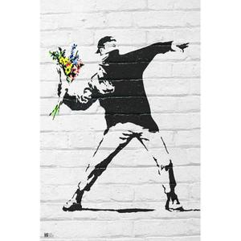

Toggle navigation
Vous n'avez pas de nouveaux messages

Moi
5 mins
J'ai vraiment beaucoup aime cette presentation !
10
Voir tout
Vous n'avez pas de notifications
Voir tout
Alexandra De-La-Pluie
Alexandra De-la-Pluie
Membre depuis Nov. 2016
Profile
se deconecter